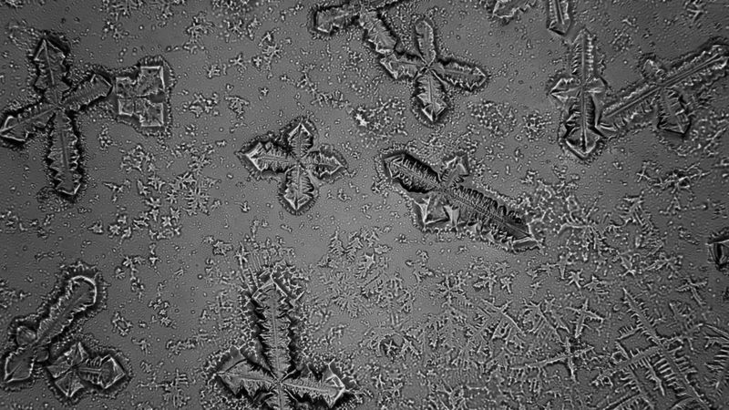

Grandes noticias sobre los cristales!

La Kryptonita
Es el mineral ficticio más famoso. La Kryptonita se originó en la explosión del planeta Krypton. El colapso de una civilización extraterrestre en el punto más álgido de su desarrollo... La destrucción de Krypton, víctima del progreso científico. De la clonación, y de un arma creada durante la guerra que enfrentó a los partidarios y a los detractores de este avance científico.

Los cristales Kyber
Un Cristal de Ilum o Cristal Kyber era un cristal de la Fuerza ubicado en Ilum y otros planetas como Christophsis. Los Jedi y los Sith los utilizaban para proporcionar energía a sus sables de luz. ... Cuando eran Iniciados Jedi, los Jedi debían encontrar un cristal Kyber para construir su propio sable de luz.

Cristales de nieve
Cuando hay mucha humedad, los cristales que forman un copo de nieve adoptan formas fascinantes. En atmósferas secas, su apariencia es más sencilla, con prismas hexagonales. Lo que intriga a los científicos es por qué estos prismas se transforman en columnas o en cuerpos chatos cuando bajan los grados. Un equipo de investigadores de la Universidad Complutense de Madrid ha dado un paso más para descifrar el enigma.

Cristales en la vida cotidiana
Algunos ingredientes fundamentales que usamos en nuestra alimentación, como la sal y el azúcar, también son cristales . La sal es un cristal en el que los átomos de cloro y de sodio forman una red cúbica. ... Otro cristal que forma parte de nuestra alimentación es el chocolate.
Construyendo cristales de tiempo continuo a partir de eventos raros
Las transiciones de fase dinámica (DPT) que rompen la simetría abundan en las fluctuaciones de los sistemas de desequilibrio. Aquí mostramos que las características espectrales de una clase particular de DPT exhiben las huellas dactilares de la fase de cristal de tiempo recientemente descubierta de la materia. Utilizando la transformación de Doob como herramienta, proporcionamos un mecanismo para construir generadores de cristales de tiempo a partir de las estadísticas de eventos raros de algunos sistemas de difusión impulsados. Un análisis del campo inteligente de Doob en términos del parámetro de orden de la transición conduce al proceso de exclusión de cristales de tiempo (tcEP), un gas de red estocástico sujeto a un campo de empaquetamiento externo que presenta una clara transición de fase de estado estable. a una fase cristalina en el tiempo que rompe la simetría de traslación temporal continua y muestra rigidez y orden espacio-temporal de largo alcance. Un análisis hidrodinámico de la transición tcEP descubre similitudes sorprendentes, pero también diferencias clave, con la transición de sincronización de Kuramoto. También se discuten posibles realizaciones experimentales del tcEP
Patrones que se repiten

Primero debemos tener claro qué es un cristal. En física, un cristal se define como un objeto cuyos átomos están ordenados de tal manera que crean un patrón que se repite. En un líquido, por ejemplo, las moléculas se distribuyen de manera simétrica, como un enjambre uniforme. Cristal de sal. FUENTE DE LA IMAGEN,GETTY Pie de foto, En un cristal de sal, por ejemplo, se observa cómo sus partículas crean patrones que se repiten. En un cristal, en cambio, las moléculas se agrupan formando redes y estructuras que van creando una secuencia. Por eso, Wilczek dice que "los cristales son las sustancias más organizadas de la naturaleza". Si miras bajo un microscopio, podrás ver, por ejemplo, las estructuras de los cristales de sal o de la nieve.
Romper la simetría
Como dijimos antes, un líquido es simétrico, es decir, sus propiedades son iguales en cualquiera de sus puntos. Si de alguna manera se logra romper esa simetría, el líquido deja de ser líquido y se convierte, por ejemplo, en un cristal. Hielo. FUENTE DE LA IMAGEN,GETTY Pie de foto, Cuando el agua se congela, se cristaliza. Bajo el microscopio se pueden observar los patrones que forma el hielo. Piensa por ejemplo en el agua. En su estado líquido es simétrica, pero al congelarse sus partículas se convierten en cristales que rompen esa simetría, creando un patrón que se repite a lo largo de su estructura. En su investigación, Hurtado y su equipo querían romper la simetría de un fluido, pero no a lo largo de su espacio, sino del tiempo. Para ello, en una súpercomputadora simularon aplicarle al fluido algo llamado "campo externo de empaquetamiento". Ese campo lo que hace es empujar algunas de las partículas del fluido y frenar a otras, con lo cual se produce una acumulación de partículas que a su vez produce una onda que viaja de manera constante por el sistema. El resultado fue que el paquete de partículas comenzó a viajar incesantemente por el sistema
¿Para qué pueden servir?
En 2017 algunos trabajos ya habían mostrado de manera experimental la posibilidad de crear otros tipos de cristales de tiempo a nivel cuántico. Cristal. FUENTE DE LA IMAGEN,GETTY Pie de foto, Los cristales de tiempo son una ciencia que apenas comenzamos a comprender. El trabajo de Hurtado fue teórico, pero ya no a nivel cuántico, sino en un sistema clásico, es decir, macroscópico. Samuli Autti, investigador del departamento de física de la Universidad de Lancaster en Reino Unido, quien no estuvo involucrado en esta investigación, le dice a BBC Mundo que el trabajo de Hurtado "es un gran paso" para comprender mejor los cristales del tiempo que en 2012 comenzó a sugerir Wilczek. Los cristales del tiempo son un área de estudio que está en sus inicios, pero desde ya permiten soñar con impresionantes usos en la ciencia y la tecnología. Este estado de la materia permite especular, por ejemplo, con la posibilidad de que en un futuro existan máquinas de movimiento perpetuo. Hielo. FUENTE DE LA IMAGEN,GETTY Pie de foto, Los cristales de tiempo nos pueden ayudar a comprender mejor nuestro universo. Wilczek también menciona que los cristales de tiempo podrían servir para fabricar relojes mucho más precisos y estables que los poderosos relojes atómicos que ya existen. "Serían capaces de realizar medidas exquisitas de la distancia y el tiempo", escribió el físico en Scientific American. También se refiere a la posibilidad de desarrollar GPS mejorados, nuevos métodos para descubrir depósitos mineralesmediante la interacción con la gravedad, o la detección de ondas gravitacionales. Finalmente, Wilczek comenta que descubrir nuevas formas en las que se puede organizar la materia puede llevarnos a entender mejor los agujeros negros y el espacio-tiempo en el cosmos. Todo eso aún pertenece al terreno de la especulación, pero quizás algún día llegue el momento en que un cristal de tiempo sea más útil y valioso que el más fino de los diamantes.
Mas informacion en: